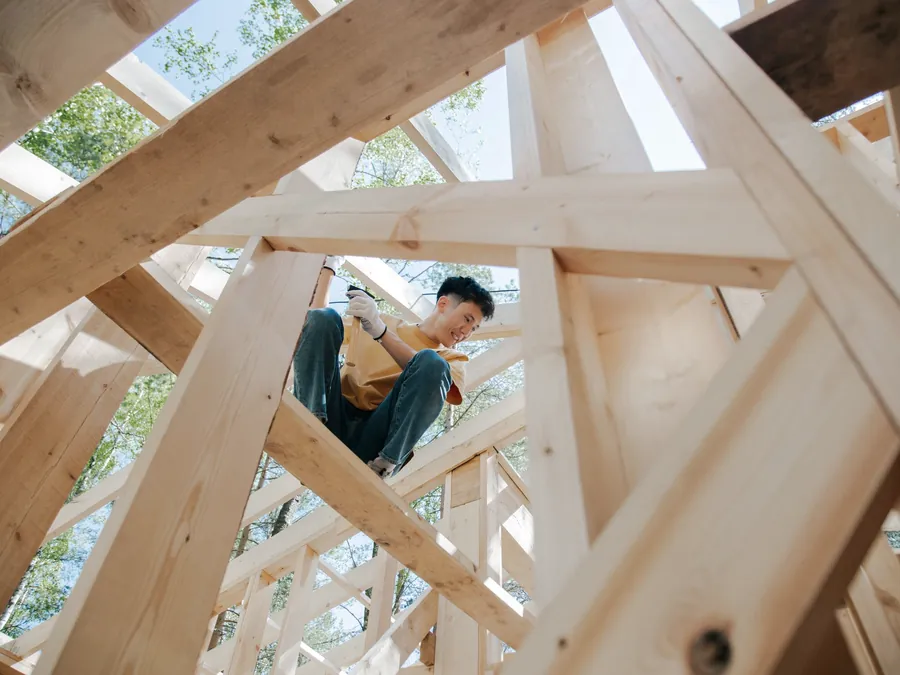
01
Budowa dachów
Nowy dach od konstrukcji po obróbki. Stawiamy więźby i wiązary, kładziemy pokrycie, montujemy rynny i okna dachowe.
- więźba i wiązary
- pokrycie
- obróbki blacharskie
- podbitka
Firma dekarska i ciesielska · Libiąż
Budujemy, remontujemy i wymieniamy dachy w Libiążu i okolicy. Stawiamy więźby i konstrukcje drewniane, a materiały dostarczamy razem z montażem.
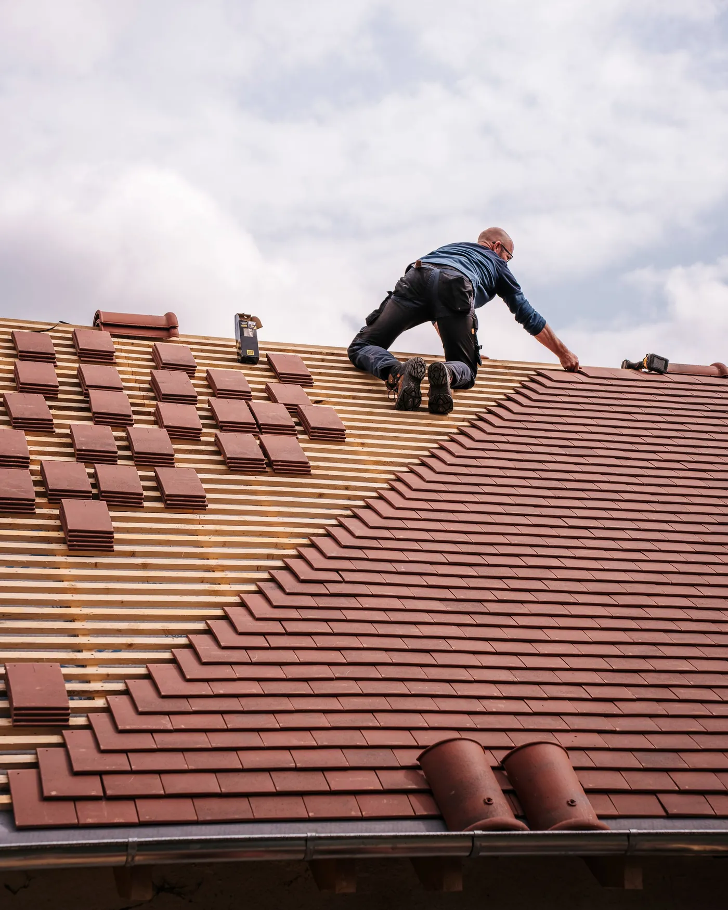
Dachy
Oferta
Od nowego dachu po drobną naprawę. Pomagamy też dobrać pokrycie, drewno konstrukcyjne, rynny i pozostałe materiały.

01
Nowy dach od konstrukcji po obróbki. Stawiamy więźby i wiązary, kładziemy pokrycie, montujemy rynny i okna dachowe.
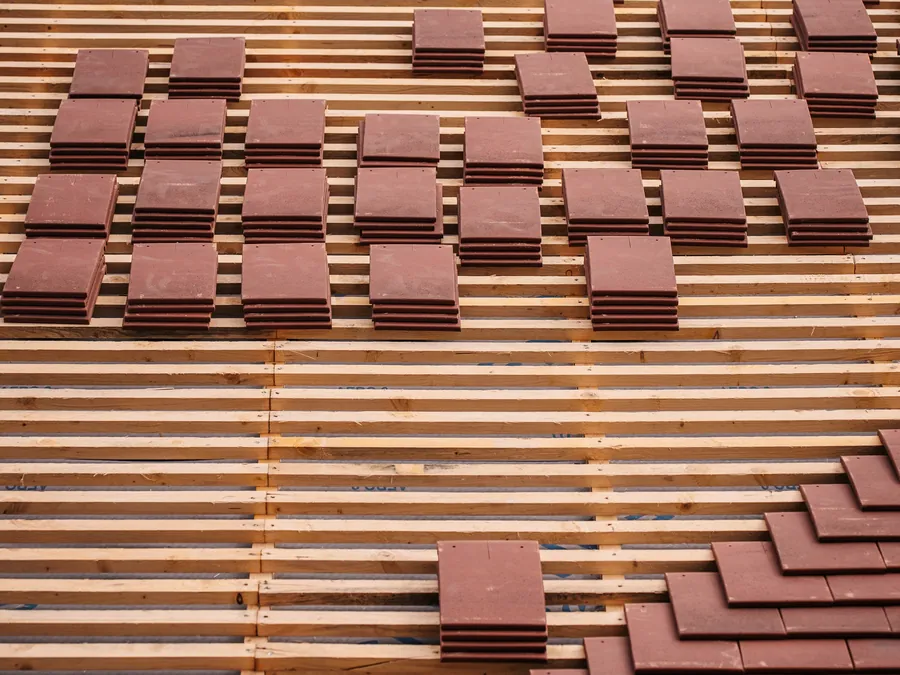
02
Wymieniamy zużyte pokrycie, w razie potrzeby razem z konstrukcją. Remonty, przebudowy i malowanie dachów.
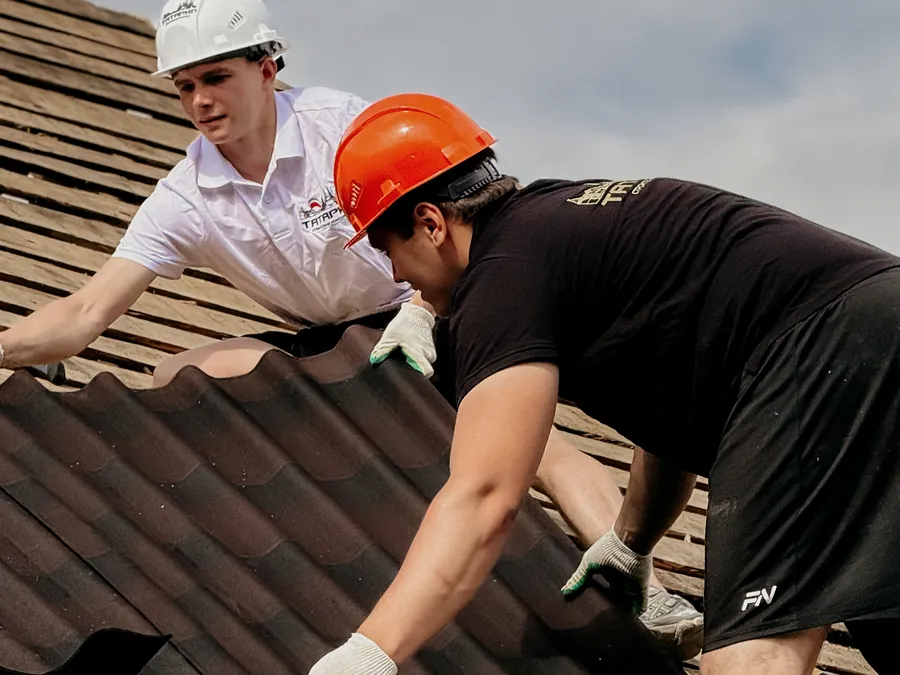
03
Naprawiamy przecieki i montujemy to, co na dachu najważniejsze. Odśnieżanie i prace wysokościowe.
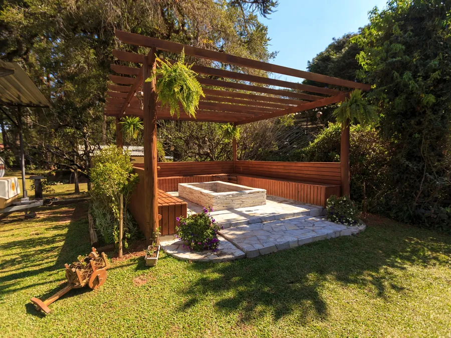
04
Drewno na zewnątrz domu: miejsce na posiłek z rodziną, kawę albo książkę. Projekt dopasujemy do Twoich potrzeb.
Realizacje
Kilka realizacji z opisem pokrycia i materiałów.
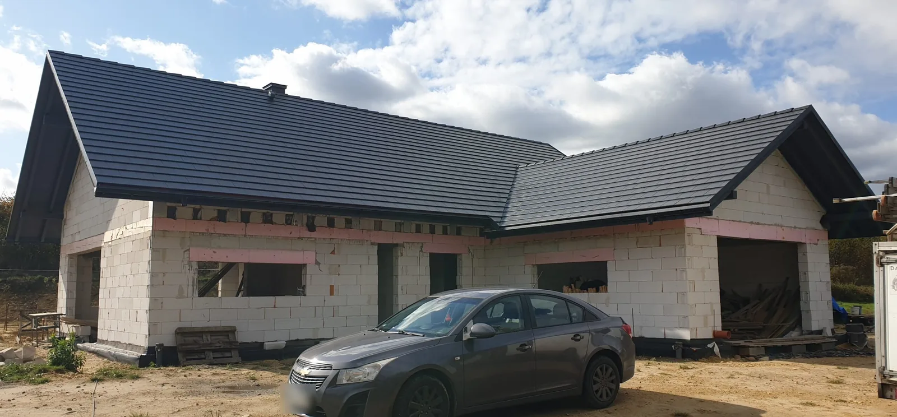
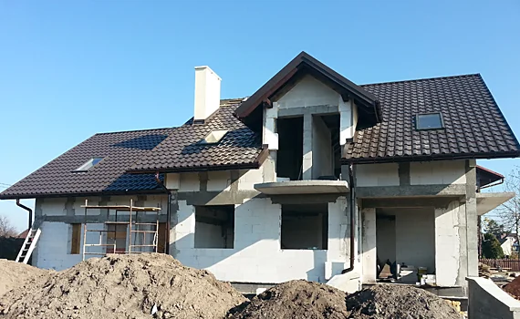
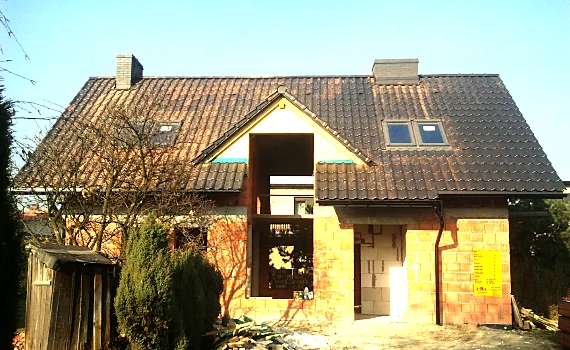
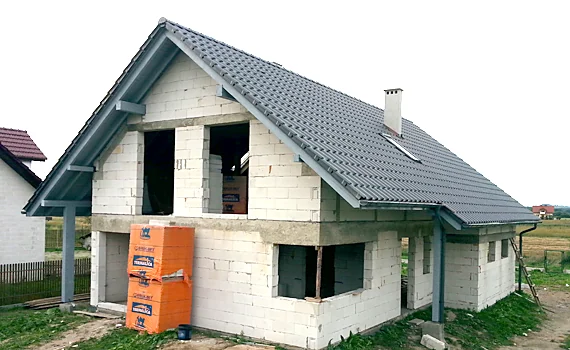
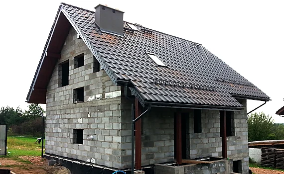
Jak pracujemy
Powiedz, co trzeba zrobić, gdzie stoi budynek i jaki to dach. Zdjęcia dachu bardzo pomagają.
Przyjeżdżamy na miejsce, oglądamy dach i konstrukcję, mierzymy.
Proponujemy zakres prac oraz pokrycie, drewno, rynny i resztę materiałów, dobrane do potrzeb i budżetu.
Wykonujemy dach jako główny wykonawca. Materiały dostarczamy razem z montażem.
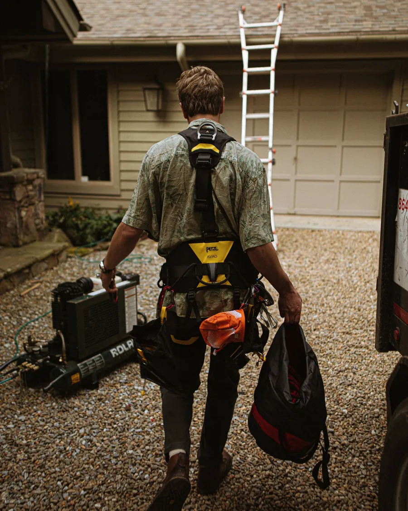
O firmie
Realizujemy projekty od 2006 roku, głównie w województwie małopolskim i śląskim. Budujemy domy i dachy, stawiamy więźby, altany i tarasy, remontujemy i przebudowujemy dachy. Wykonujemy też prace wysokościowe, murarskie i zbrojeniowe związane z budową.
Pracujemy jako główny wykonawca. Zespół to doświadczeni pracownicy z wieloletnim stażem w montażu i pracach wysokościowych, z własnym zapleczem narzędziowym.
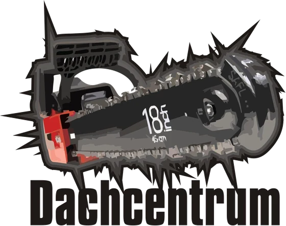
Obszar
Pracujemy głównie w tych miastach i w ich okolicy, na granicy Małopolski i Śląska. Inna lokalizacja? Zadzwoń, porozmawiamy.
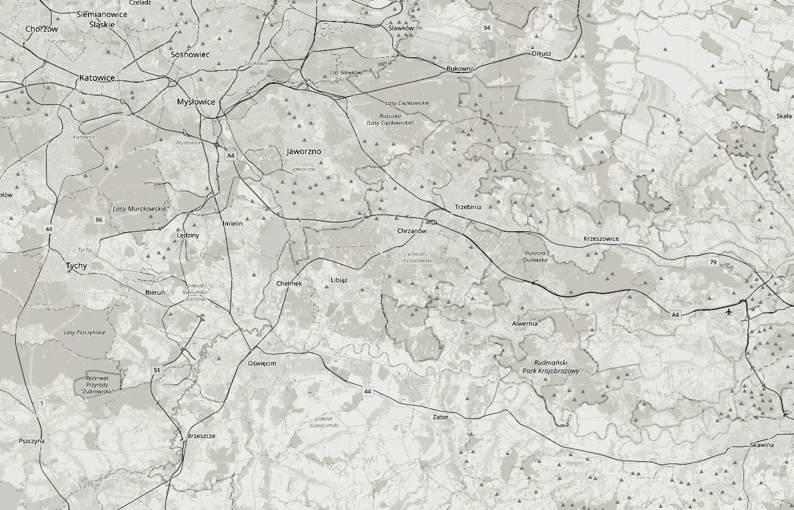
Kontakt
Zadzwoń albo napisz, co trzeba zrobić i gdzie. Oddzwonimy lub odpiszemy z propozycją oględzin.
Telefon+48 600 077 022 E-mailorzech.dachcentrum@gmail.comDachcentrum Marcin Orzechowski
ul. 11 Listopada 12/65
32-590 Libiąż
NIP 628 204 74 05
Wyznacz trasę